Cómo dibujar labios

Paso 1:Dibujo un triángulo
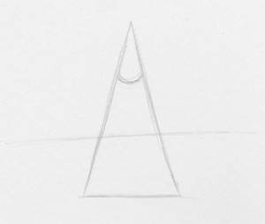Dibuja un triángulo isósceles largo. A la mitad, dibuja una curva (similar a una "U"). Dibuja una línea recta horizontal entre la "U" y la base del triángulo. Cuanto más larga sea la línea horizontal, más anchos serán los labios. Cuanto más corta sea la línea, más carnosos serán.
Paso 2: Dibuja un arco
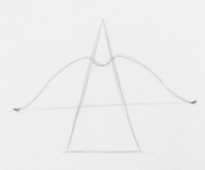Crea los contornos del labio superior haciendo una forma similar a un arco de Cupido.
Paso 3: Dibuja el labio inferior
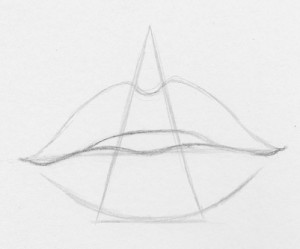Dibuja el labio inferior. Debe ser más grueso que el labio superior. La forma del labio inferior debe ser similar a una "U" ancha.
Paso 4: Decide la dirección de la luz
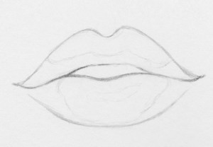 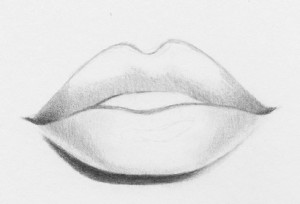Después de borrar el triángulo, determina de dónde proviene la fuente de luz. En este ejemplo, la fuente de luz proviene de la esquina superior derecha. He delineado las áreas que quiero resaltar y he añadido una sombra proyectada en el lado izquierdo del labio inferior.
Paso 5: Sombrea el labio superior e inferior
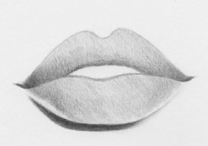Sombrea tanto el labio superior como el inferior, dejando las áreas mencionadas en el PASO 4 más claras. Como puedes ver, hay una sombra oscura debajo del labio inferior. Empieza a desvanecerse en el lado derecho para indicar que la fuente de luz proviene de la esquina superior derecha.
Paso 6: Añade arrugas en los labios
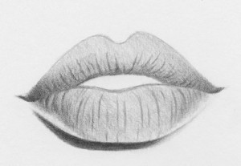Crea algunas arrugas en los labios con un lápiz HB de 0,5 mm. No presiones demasiado o será difícil lograr el efecto en el siguiente paso.
Paso 7: Difumina el labio inferior
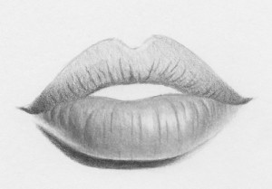difumina el sombreado en el labio inferior. Evita las zonas mencionadas en el PASO 4. Estas zonas harán que los labios se vean más carnosos y redondos. Notarás que las arrugas del labio se difuminan poco a poco con el sombreado. ¡Pero no deberían desaparecer!
Paso 8: Añade más detalles
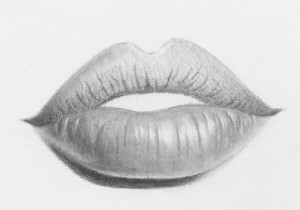Repasa las áreas más claras con el extremo puntiagudo de una goma de borrar amasable y limpia los reflejos para crear el efecto de resplandor.
Paso 9: Repetir
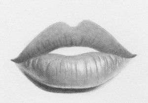Repite los PASOS 7 a 8 para el labio superior
Paso 10: Detalles finales
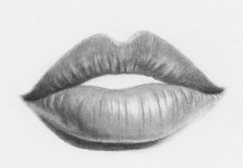Utilizando un lápiz 6b, oscurece las sombras en zonas como los bordes externos de los labios, debajo del labio inferior, las arrugas y las comisuras de los labios. Puedes cambiar el tamaño de los labios moviendo la línea horizontal hacia arriba (para afinar el labio superior) o hacia abajo (para engrosarlo). Además, añadir más brillo hará que los labios se vean aún más carnosos.